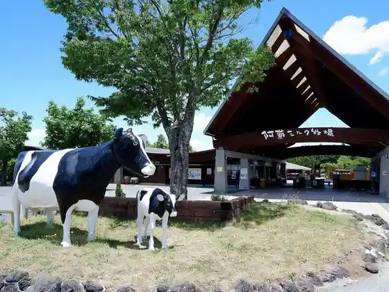
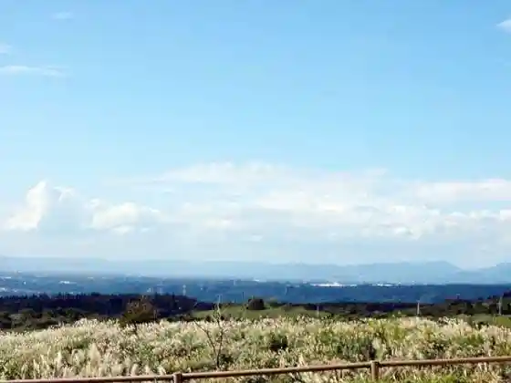
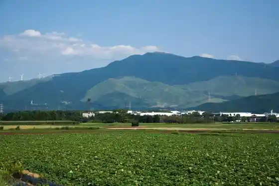
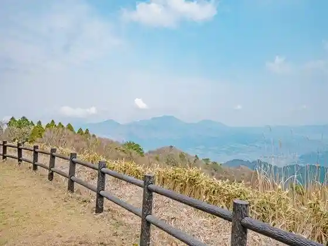

Raku no U Mazazu Aso Miruku Ranch (Kumamotoken'aso Gun Nishihara Kawara Fuji Mizu 3944-1)
Nishihara, Kumamoto · 096-292-2100 · Official / source link

Ogi Saka Tembo Tokoro (Tawarayama)
Nishihara, Kumamoto · 096-279-3111 · Official / source link

Tawarayama
Nishihara, Kumamoto · 096-279-3111 · Official / source link

Shiroito Falls
Nishihara, Kumamoto · 096-279-1136 · Official / source link
Kangagaku
Nishihara, Kumamoto · 096-279-3111 · Official / source link

Tawarayama Koryu Kan Ho Village (Kumamotoken'aso Gun Nishihara Komori 2115-3)
Nishihara, Kumamoto · 096-292-2211 · Official / source link
Doraibuinshiata Aso
Nishihara, Kumamoto · 080-6401-5560 · Official / source link
Nishihara Seishonen Forest (Kaze Village) Campground
Nishihara, Kumamoto · 096-279-2884 · Official / source link
Kumamoto Wa Gyu
Nishihara, Kumamoto · 096-234-7651 · Official / source link
Ranch Resutoran Mazazukitchin (Raku no U Mazazu Aso Miruku Bokujo Nai)
Nishihara, Kumamoto · 096-292-2100 · Official / source link
Nami Zo
Nishihara, Kumamoto · 096-279-3112 · Official / source link
Taka Yu Hara Purenkyanpazu
Nishihara, Kumamoto · 070-9139-1692 · Official / source link
Aso Maron no Ki Oto Campground
Nishihara, Kumamoto · 096-279-1588 · Official / source link
310 Shokudo
Nishihara, Kumamoto · 096-279-4000 · Official / source link
Raku no U Mazazu Aso Miruku Ranch (Kumamotoken'aso Gun Nishihara Kawara 3944-1)
Nishihara, Kumamoto · 096-292-2100 · Official / source link
Tawarayama Koryu Kan Ho Village (Kumamotoken'aso Gun Nishihara Komori 2115-1)
Nishihara, Kumamoto · 096-292-2211 · Official / source link
Ryoshuku Rasshii
Nishihara, Kumamoto · 096-279-4879 · Official / source link